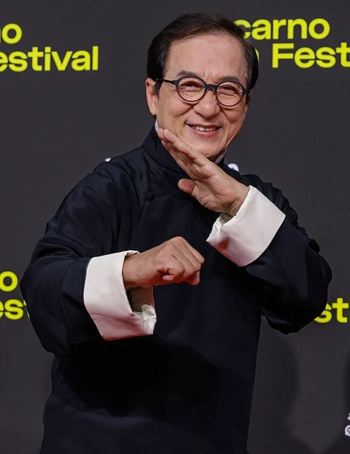

|
 |
Chinese Name | Chan Kong-sang |
|---|---|---|
| English Name | Jackie Chan | |
| Born | 7 April 1954 , British Hong Kong | |
| Nationality | Chinese | |
| Awards | Awards and Nominations | |
| Occupation | Martial artist,actor,director,writer,producer,action choreographer,singer,stunt director,stunt performer | |
| Years Active | 1962-Present | |
| Height | 5'9" | |
| Spouse | Joan Lin (m,1982) | |
| Children | 2, including Jaycee Chan and Jet Chan |
Jackie Chan was born in Hong Kong and studied in New York. He later returned to Hong Kong and pursued a career in martial arts and film.
Jackie Chan released his first album in 1980 and later became a successful actor starring in films such as Mudras Calling, Deception and Now & Ever.
| Year | Title | Director | Role |
|---|---|---|---|
| 1978 | Snake in the Eagle's Shadow | Yuen Woo-ping | Chien Fu |
| 1980 | The Young Master | Yuen Woo-ping | Wong Fei-hung |
| 1983 | Project A | Jackie Chan | Sergeant Dragon Ma |